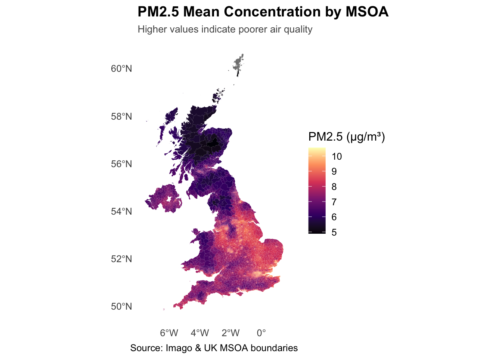
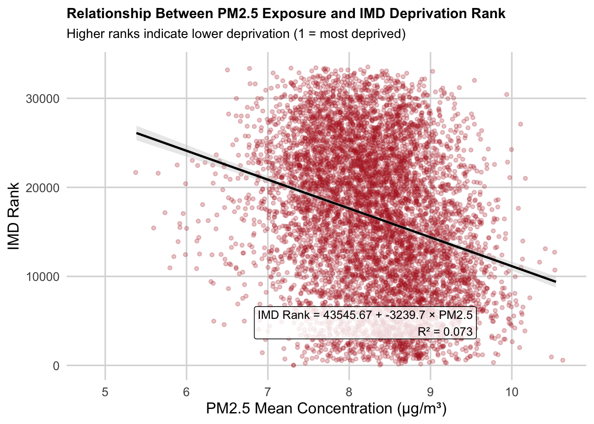

# Load the 'sf' library, which stands for Simple Features, used for working with spatial data.
library(sf)
# Load the 'tidyverse' library, a collection of packages for data manipulation and visualization.
library(tidyverse)
# Load the 'tmap' library, which is used for creating thematic maps and visualizing spatial data.
library(tmap)
# The 'readr' library provides a fast and user-friendly way to read data from common formats like CSV.
library(readr)
# Converts Between GeoJSON and simple feature objects
library(geojsonsf)
# Using data from OpenStreetMap (OSM)
library(osmdata)
# Static maps
library(basemapR)
library(ggplot2)
library(viridis)
library(dplyr)
library(readr)Imago data product with R
Approach:
Instructor demonstrates using one product; participants repeat steps using other dataset combinations.
This demo will explore pollution PM2.5 data and IMD 2025.
To have more fun. explore heat? lots of possibilities - and specific aspects of IMD? Domains of deprivation or other MSOA level data
Installing packages
We will start by loading core packages for working with spatial data. See detailed description of R.
Load LSOA boundary data + chosen Imago product
Review comment
EP: will need to ammend this so it linkes back to data catalogue
Load MSOA boundary data –> replace with links
msoa_uk <- read_sf("../data/UK_MSOA_IZB_SDZ.shp")–> replace with links Load pollution data product
pm25 <- read.csv("../data/PM25_concentration_MSOA_2023.csv") # import housesales data from csvMerge
Merge and then plot variable pm2.5_mean with ggplot
msoa_pm25 <- msoa_uk %>%
left_join(pm25, by = c("dt_zn_c" = "dt_zn_c"))Summary stats
summary(msoa_pm25$pm2.5_mean) Min. 1st Qu. Median Mean 3rd Qu. Max. NA's
4.891 7.388 8.010 7.973 8.602 10.543 6 Useful for understanding tail behaviour and skewness.
quantile(msoa_pm25$pm2.5_mean, probs = seq(0, 1, 0.1), na.rm = TRUE) 0% 10% 20% 30% 40% 50% 60% 70%
4.891121 6.862401 7.242492 7.513803 7.758437 8.009963 8.242344 8.488465
80% 90% 100%
8.724281 9.064899 10.543109 Clean and inspect: basic summary statistics for pm2.5_mean
–> Make map bigger & legend smaller
ggplot(msoa_pm25) +
geom_sf(aes(fill = pm2.5_mean), colour = NA) +
scale_fill_viridis_c(
option = "magma",
name = "PM2.5 (µg/m³)",
direction = 1,
breaks = scales::pretty_breaks(6) # clean, human-friendly scale
) +
labs(
title = "PM2.5 Mean Concentration by MSOA",
#subtitle = "Higher values indicate poorer air quality",
caption = "Source: Imago"
) +
theme_minimal(base_size = 12) +
theme(
plot.title = element_text(face = "bold"),
plot.subtitle = element_text(size = 10, colour = "#555555"),
legend.position = "right",
panel.grid.major = element_blank(),
panel.grid.minor = element_blank(),
plot.caption = element_text(hjust = 0.5) # centre caption
)
Merge with IMD (deprivation)
–> Replace with Link
# Load IMD data (replace filename with actual catalogue link)
imd <- read_csv("../data/File_1_IoD2025_Index_of_Multiple_Deprivation.csv")Rows: 33755 Columns: 6
── Column specification ────────────────────────────────────────────────────────
Delimiter: ","
chr (4): LSOA code (2021), LSOA name (2021), Local Authority District code (...
dbl (2): Index of Multiple Deprivation (IMD) Rank (where 1 is most deprived)...
ℹ Use `spec()` to retrieve the full column specification for this data.
ℹ Specify the column types or set `show_col_types = FALSE` to quiet this message.# Inspect column names to identify the join key
names(imd)[1] "LSOA code (2021)"
[2] "LSOA name (2021)"
[3] "Local Authority District code (2024)"
[4] "Local Authority District name (2024)"
[5] "Index of Multiple Deprivation (IMD) Rank (where 1 is most deprived)"
[6] "Index of Multiple Deprivation (IMD) Decile (where 1 is most deprived 10% of LSOA"Aggregate up to MSOA and merge with pollution dataset
https://geoportal.statistics.gov.uk/datasets/589ae01495bf4ddfaaa25b96476d53d7/about Postcode to OA (2021) to LSOA to MSOA to LAD (May 2025) Best Fit Lookup in the UK
# 1. Load lookup
LSOA21_MSOA21 <- read_csv("../data/PCD_OA21_LSOA21_MSOA21_LAD_MAY25_UK_LU.csv") %>%
select(lsoa21cd, msoa21cd, ladcd, lsoa21nm, msoa21nm, ladnm)Rows: 2714964 Columns: 14
── Column specification ────────────────────────────────────────────────────────
Delimiter: ","
chr (11): pcd7, pcd8, pcds, oa21cd, lsoa21cd, msoa21cd, ladcd, lsoa21nm, mso...
dbl (3): dointr, doterm, usertype
ℹ Use `spec()` to retrieve the full column specification for this data.
ℹ Specify the column types or set `show_col_types = FALSE` to quiet this message.# 2. Join to IMD
lsoa_msoa_imd <- LSOA21_MSOA21 %>%
left_join(imd, by = c("lsoa21cd" = "LSOA code (2021)"))- Join IMD (LSOA-level)
lsoa_msoa_imd_clean <- lsoa_msoa_imd %>%
select(
lsoa21cd,
msoa21cd,
ladcd,
lsoa21nm,
msoa21nm,
ladnm,
`Index of Multiple Deprivation (IMD) Rank (where 1 is most deprived)`,
`Index of Multiple Deprivation (IMD) Decile (where 1 is most deprived 10% of LSOA`
) %>%
rename(
imd_rank = `Index of Multiple Deprivation (IMD) Rank (where 1 is most deprived)`,
imd_decile = `Index of Multiple Deprivation (IMD) Decile (where 1 is most deprived 10% of LSOA`
)mean(!is.na(lsoa_msoa_imd_clean$imd_rank)) * 100[1] 83.24475This gives the mean PM2.5 per MSOA, averaging across all LSOAs inside each MSOA.
msoa_imd_agg <- lsoa_msoa_imd_clean %>%
group_by(msoa21cd, msoa21nm, ladcd, ladnm) %>%
summarise(
imd_rank_msoa = mean(imd_rank, na.rm = TRUE)
) %>%
ungroup()`summarise()` has grouped output by 'msoa21cd', 'msoa21nm', 'ladcd'. You can
override using the `.groups` argument.msoa_imd_agg <- msoa_imd_agg %>%
mutate(msoa21cd = trimws(as.character(msoa21cd)))
msoa_pm25 <- msoa_pm25 %>%
mutate(msoa21cd = trimws(as.character(MSOA21C)))
msoa_final <- msoa_imd_agg %>%
left_join(msoa_pm25 %>% select(msoa21cd, pm2.5_mean), by = "msoa21cd")Create a scatterplot: exposure vs. deprivation decile
model <- lm(imd_rank_msoa ~ pm2.5_mean, data = msoa_final)
eq <- paste0(
"IMD Rank = ", round(coef(model)[1], 2),
" + ", round(coef(model)[2], 3), " × PM2.5\n",
"R² = ", round(summary(model)$r.squared, 3)
)
ggplot(msoa_final, aes(x = pm2.5_mean, y = imd_rank_msoa)) +
geom_jitter(alpha = 0.25, width = 0.1, size = 1.2, colour = "firebrick") +
geom_smooth(
method = "lm",
se = TRUE,
colour = "black",
linewidth = 0.9,
fill = "grey80"
) +
annotate(
"label",
x = quantile(msoa_final$pm2.5_mean, 0.98, na.rm = TRUE),
y = quantile(msoa_final$imd_rank_msoa, 0.05, na.rm = TRUE),
label = eq,
hjust = 1,
vjust = 0,
size = 3.5,
label.size = 0.2,
fill = "white",
alpha = 0.8
) +
labs(
title = "Relationship Between PM2.5 Exposure and IMD Deprivation Rank",
subtitle = "Higher ranks indicate lower deprivation (1 = most deprived)",
x = "PM2.5 Mean Concentration (µg/m³)",
y = "IMD Rank"
) +
theme_minimal(base_size = 13) +
theme(
plot.title = element_text(face = "bold", size = 12),
plot.subtitle = element_text(size = 11, margin = margin(b = 10)),
panel.grid.minor = element_blank(),
panel.grid.major = element_line(colour = "grey85")
)Warning in annotate("label", x = quantile(msoa_final$pm2.5_mean, 0.98, na.rm =
TRUE), : Ignoring unknown parameters: `label.size`Warning: Removed 3939 rows containing non-finite outside the scale range
(`stat_smooth()`).Warning: Removed 3939 rows containing missing values or values outside the scale range
(`geom_point()`).
Calculate correlations and simple inequality metrics
# Basic Pearson correlation
cor_test <- cor.test(msoa_final$pm2.5_mean, msoa_final$imd_rank_msoa)
cor_test
Pearson's product-moment correlation
data: msoa_final$pm2.5_mean and msoa_final$imd_rank_msoa
t = -23.176, df = 6854, p-value < 2.2e-16
alternative hypothesis: true correlation is not equal to 0
95 percent confidence interval:
-0.2913852 -0.2474807
sample estimates:
cor
-0.269573 # Create IMD rank quintiles
msoa_final <- msoa_final %>%
mutate(imd_quintile = ntile(imd_rank_msoa, 5)) # 1 = most deprived, 5 = least deprived
# Summarise PM2.5 by IMD quintile
ineq_table <- msoa_final %>%
group_by(imd_quintile) %>%
summarise(
mean_pm25 = mean(pm2.5_mean, na.rm = TRUE),
median_pm25 = median(pm2.5_mean, na.rm = TRUE),
n = n()
)
ineq_table# A tibble: 6 × 4
imd_quintile mean_pm25 median_pm25 n
<int> <dbl> <dbl> <int>
1 1 8.57 8.62 1372
2 2 8.46 8.53 1371
3 3 8.26 8.28 1371
4 4 8.11 8.13 1371
5 5 8.09 8.08 1371
6 NA 7.11 7.13 3939